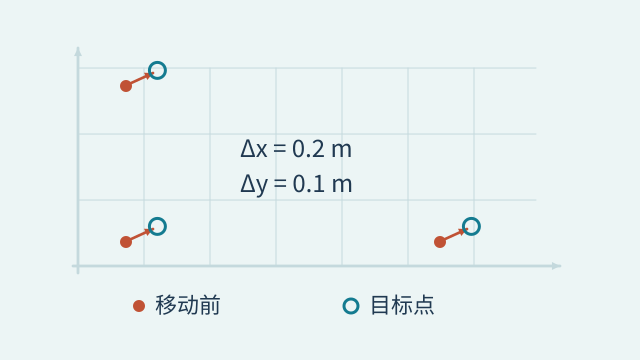
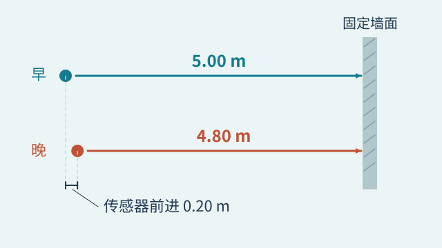
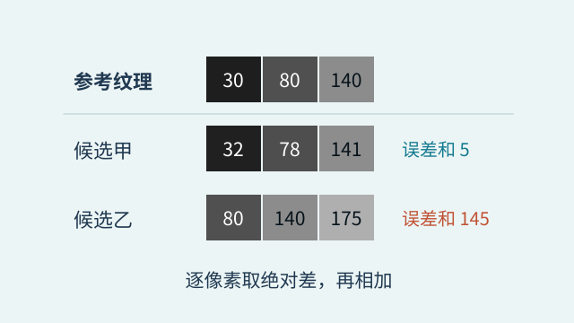
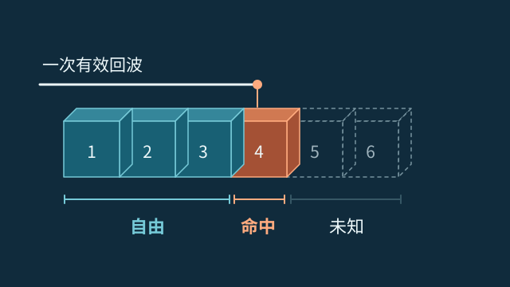
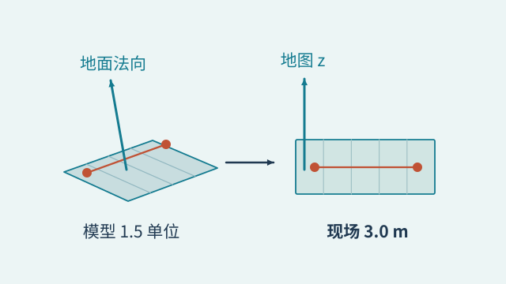

从相机和点云的坐标开始，依次学习局部运动、回环和地图规划。
先认识相机和路标，再用点云与坐标变换算出两次观测之间的运动。
从左右移动时物体的视差出发，理解相机怎样估计自身运动、恢复路标位置，并在绕回起点时校正轨迹。

用两组桌角坐标手算一次配准，再看复杂场景中的旋转、初始位姿、点到面残差和几何退化。
从两个坐标系出发推导相机中心 C = −Rᵀt，手算一次旋转，并把三维点投回像素检验方向。
把采样时间、距离误差和图像亮度放进运动估计，逐项检查它们的假设。

用一堵墙和一次匀速扫描解释点的采样时刻、IMU 运动估计，以及如何把一帧点云归到同一个参考时刻。
从盒子里的点怎样确定一张平面讲起，用有误差的尺读数演算标准化残差，理解点到面约束的权重。

把一块小纹理在两帧间的亮度差写成误差，再用三个灰度读数看清纹理方向与曝光变化带来的歧义。
从辨认同一地点，到修正一整圈轨迹，再合并多次独立采集。
把图像检索、局部特征匹配与二维到三维的位姿估计串成一次定位，用重投影和独立深度复核候选地点。
从一圈距离测量构造地点描述，区分候选检索、几何对齐与连续观察，理解什么时候只能保留多个可能位置。
把走廊往返画成由关键帧和相对运动组成的图，手算两段里程的折中解，再辨别真假回环。
用两次独立的楼层扫描建立跨图约束，计算一个二维变换，并通过未参与配准的结构检查拼接结果。
区分新照片定位、三角化和联合优化，从两段有重叠的拍摄理解怎样扩展模型并复查旧视角。
区分未知和可通行，跟踪障碍的消失，最后让机器人在真实尺度上规划路线。

沿一条测距射线手画三类空间，理解为什么空白点云无法直接表示通道，以及多次观测如何更新体素。
把一把临时搬到过道里的椅子写入局部地图，分清命中、射线清除、过期和移出滚动窗口各自表示什么。

利用已知距离、地面平面和前进方向恢复模型的米制参考系，再用独立量测核对地图里的位置与通行宽度。
先把体素地图变成机器人能够移动的图，再手算一次 A* 排序，比较绕行距离与贴近障碍的代价。